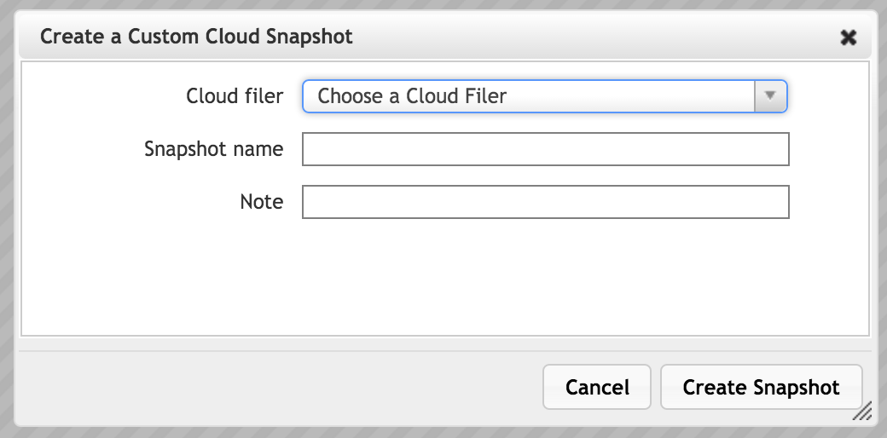

Core Filer > Cloud Snapshots

The Cloud Snapshots page lists the existing snapshot files for core filers in this cluster. You can delete snapshots, or protect them from deletion.
This page also allows you to create a manual snapshot.
Working with the Snapshot Table
Use the Choose Cloud Filer drop-down at the top of the page to show snapshots from one core filer only.
You can sort snapshots by column values by clicking on a column heading. Type text in the Search field above the list to show only snapshots that match the search. (Clear the search field to show all snapshots.)
Click the triangle at the left of a snapshot row to show or hide details.
Snapshot Information
The table provides these details about each snapshot.
- Cloud Filer:
- Which cloud core filer is associated with this snapshot
- Snapshot Name:
- Names for automatic snapshots (the result of snapshot policies) include the schedule type (hourly, daily, weekly, monthly), date (YYYY-MM-DD), and time (HHMM).
- Names for manual snapshots are specified by the administrator when the snapshot is created.
- State:
- active is an available snapshot
- init is a snapshot being created
- deleting is a snapshot being deleted
- deleted is a deleted snapshot
- Admin State:
- Displays a hyphen (-) if a snapshot can be removed, or hold if it is protected from deletion
- Size:
- The amount of disk space used by this file. If compression is enabled for the core filer, the snapshot size might be smaller than the size returned by a disk usage query on the core filer.
- Data Written:
- The size difference between this snapshot and the one preceding it
- Freed On Delete:
- The estimated amount of space that will be freed when this snapshot is deleted. Sizes are estimated based on a sampling of snapshot objects. This is done to reduce customer costs which would be much higher if reading all cloud objects.
- Create Time:
- The date and time the snapshot was created
- Actions:
- Selects this snapshot to perform actions from the buttons above the table
Protecting and Deleting Snapshots
The buttons above the snapshot table include options to delete snapshots or protect snapshots from automatic deletion.
Manual snapshots are not automatically deleted, but snapshots created automatically by a snapshot policy are automatically deleted according to the policy’s Maximum Snapshot Count settings. If you want to prevent a particular snapshot from being deleted, use the Hold feature.
- Select one or more snapshots in the table using the Actions checkboxes.
- Click the button corresponding to the action that you want to perform:
- Hold - Do not automatically delete this snapshot (applies to automatically created snapshots only)
- Release - Remove a “hold” setting on this snapshot so that it can be automatically deleted
- Remove - Delete the selected snapshot (or snapshots) immediately
Creating a Manual Snapshot
To create a new snapshot immediately, click the Create button at the top of the page. A window pops up and allows you to configure a manual snapshot.
Choose the core filer to snapshot, and enter a name for the snapshot. Including a note is optional. Click Create Snapshot after setting up the operation.
Snapshot creation might take several minutes. After a few moments, the new manual snapshot appears in the table, under the name specified in the dialog.
Caution
Clients can experience high latency during snapshot creation because Avere OS disables write caching in order to create the snapshot. Writing file changes to the cloud core filer instead of to the cache can be significantly slower.
Restoring Files from Snapshots
You can use a snapshot to restore changed or lost files. You must use the command-line interface to restore files from a snapshot.
All snapshot files are read only.
To restore files from a snapshot:
Mount the vserver that is associated with the cloud core filer. For example:
mount 203.0.113.123:/cloud/ /tmp/source/Navigate to the mount point destination.
cd /tmp/sourceChange to the .snapshot directory.
cd .snapshotList the folders in the .snapshot directory and change to the directory that corresponds to the snapshot that you want to use. Manual snapshots are stored in a directory labeled with the snapshot name; automatic snapshot directories are named with a combination of the snapshot name and the date and time.
Locate the file or files that you want to restore and copy them from the snapshot directory to a convenient location on the local machine.
cp myfile.txt /tmp/restored/myfile.txt